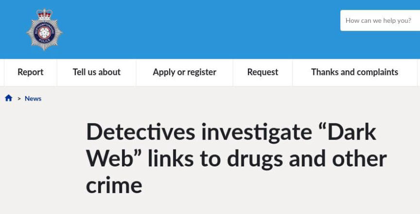
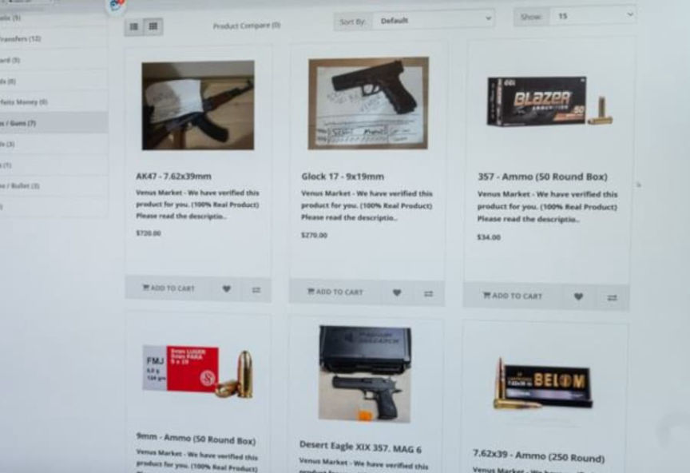
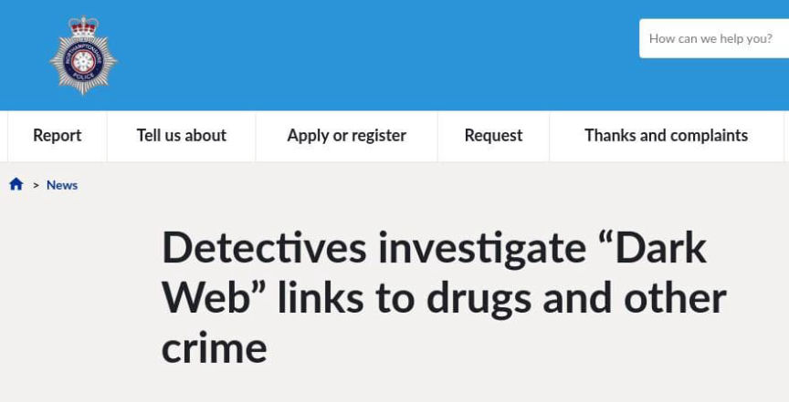
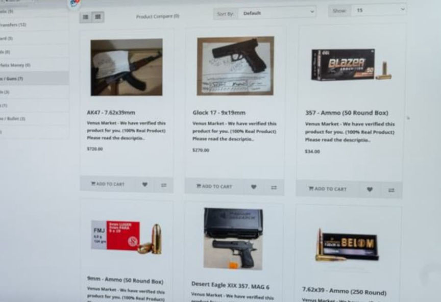

Police in the UK Discover Link Between the Darkweb and Crime
~1 min read | Published on 2022-08-10, tagged DarkWeb, General-News using 248 words.
Investigators with the Northamptonshire Police in the U.K. have discovered a link between the darkweb and criminal activity, including drug trafficking.

The Northamptonshire Police published a press release highlighting the Force’s “hi-tech war on drug dealers lurking on the so-called Dark Web.”
“The Force now uses [em]specialist software[/em] to allow detectives to access the Dark Web where criminals can interact using private networks that do not reveal key information such as location.”
“However, digital media investigators (DMI) now have the Dark Web very clearly in their sights when it comes to detecting online criminality, including drug dealing.”
Detective Sergeant Jason Cullum, one of the Force’s senior DMIs, said:
“During our latest week of action focusing on drug harm, we thought it would be useful to shine a light on the work we are doing in relation to tackling criminality on the Dark Web. We have invested in new software and more officers are receiving specialist training which will enable then to tackle criminals who wrongly think they are operating beyond the reach of the law. Northamptonshire is in the early stages of this journey, but our approach is becoming ever more sophisticated.”

It is so over for criminals. Nothing gets past these guys.
[em]Detectives investigate “Dark Web” links to drugs and other crime[/em] | northants.police.uk (Article is behind a Cloudflare captcha.)

The Force's top men are on the case.
The Northamptonshire Police published a press release highlighting the Force’s “hi-tech war on drug dealers lurking on the so-called Dark Web.”
“The Force now uses [em]specialist software[/em] to allow detectives to access the Dark Web where criminals can interact using private networks that do not reveal key information such as location.”
Northamptonshire Police investigators appear to be operating or investigating a darkweb market for firearms
“However, digital media investigators (DMI) now have the Dark Web very clearly in their sights when it comes to detecting online criminality, including drug dealing.”
Detective Sergeant Jason Cullum, one of the Force’s senior DMIs, said:
“During our latest week of action focusing on drug harm, we thought it would be useful to shine a light on the work we are doing in relation to tackling criminality on the Dark Web. We have invested in new software and more officers are receiving specialist training which will enable then to tackle criminals who wrongly think they are operating beyond the reach of the law. Northamptonshire is in the early stages of this journey, but our approach is becoming ever more sophisticated.”

The market appears to be called Venus Market. Is that a Glock 17 for $279?
It is so over for criminals. Nothing gets past these guys.
[em]Detectives investigate “Dark Web” links to drugs and other crime[/em] | northants.police.uk (Article is behind a Cloudflare captcha.)